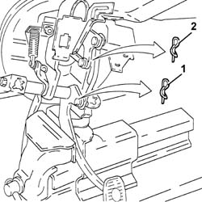
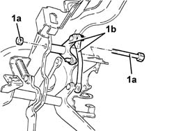
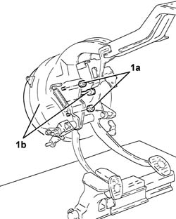
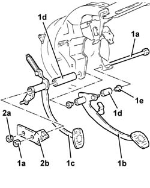

3330D19 brake servo - pedal unit - dismantle at bench for right hand drive versions
- Path
- Procedures > 33 BRAKING SYSTEM > 3330 HYDRAULIC BRAKING SYSTEM > 3330D brake vacuum system > 3330D19 brake servo - pedal unit - dismantle at bench for right hand drive versions
- Kind
- repair procedure (removal / refitting; the operation number is the code)
- Applies to
- engines: 1.6 TS , 1.8 TS; all production periods
- Interactive page
- https://sloeber94.github.io/elrnDB-a156/en/#/3238087
Applies to: engines: 1.6 TS , 1.8 TS; all production periods; only with equipment: Right hand drive
 Removing
Removing
 Refitting
RefittingPlace the brake servo/pedal assembly in a vice fitted with protective jaws.
1. Remove the split pin and disconnect the brake pedal from the end of the relay rod.
2. Remove the split pin and disconnect the master cylinder rod from the relay.

Applies to: engines: 1.6 TS , 1.8 TS; all production periods; only with equipment: Right hand drive
1. Undo the bolt (1a) and remove the relay unit (1b).

Applies to: engines: 1.6 TS , 1.8 TS; all production periods; only with equipment: Right hand drive
1. Undo the nuts (1a) and remove the pump/brake servo assembly (1b).

Applies to: engines: 1.6 TS , 1.8 TS; all production periods; only with equipment: Right hand drive
1. Undo the bolt (1a) and remove the brake pedal (1b) and clutch pedal (1c) with the relevant bushes (1d) and spacers (1e).
2. Undo the remaining nut (2a) and remove the clutch pedal mounting bracket (2b).

Applies to: engines: 1.6 TS , 1.8 TS; all production periods; only with equipment: Right hand drive
Refitting
RemovingRefit the clutch pedal mounting bracket in its seating and tighten its nut.
Refit the clutch and brake pedals in their seatings with the relevant bushes and spacers, then tighten the bolt to the specified torque.
 | Fastening | Component | Ø | Value (daNm) |
|---|---|---|---|---|
- | Bolt | CLUTCH PEDAL | M8 | (Pedals side) 2.7 - 3.4 |
Refit the pump/brake servo assembly in its seating and tighten its nuts to the specified torque.
Refit the relay unit in its seating and tighen the relevant bolt.
Connect the master cylinder rod to the relay and secure it with its split pin.
Connect the brake pedal to the end of the relay unit and secure with its split pin.
Remove the brake servo/pedal assembly from the vice.